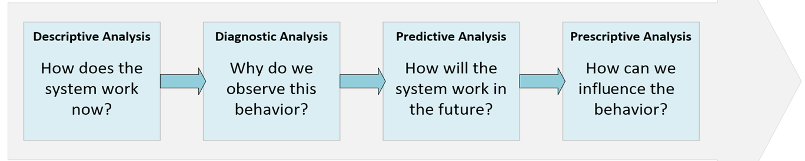

Data is everywhere. At this very moment, thousands of systems are collecting records that make up the history of specific services, together with logs, user interactions, and many other context-dependent elements. We can say that a large amount of data from a variety of sources usually carries a lot of information. In order to extract and categorize the information, it's necessary to take an automated approach. Machine learning has opened the door of opportunities for generating value from data.
Think of a cloudy day when the sky is full of dark clouds and thunderstorms. Looking at the cloudy sky, the first question came into your mind is whether it is going to rain soon! But are you really confident about it? How can you make sure whether it is going to rain or not? Based on your past experience and weather knowledge maybe you make a decision. Machine learning does the same. We use machine learning to learn based on historical data and predict the future. This is called predictive analysis. Machine Learning is also applied to other branches of analyses.
Formally, Machine learning is a large branch of computer science (in particular, artificial intelligence), which aims to implement descriptive, Diagnostic, predictive, and prescriptive analysis models of reality by exploiting data.

Figure: Machine Learning analysis types [1]
Machine learning became glorified in the 1990s, when researchers started using it to day-to-day life problems. In the early 2000s, the internet and digitization poured fuel on this fire, and over the years companies like Google, Amazon, Facebook, and Netflix started leveraging machine learning to improve human-computer interactions even further. Voice recognition and face recognition systems have become our go-to technologies. More recently, artificially intelligent home automation products, self-driving cars, and robot butlers have gained significant attention.
SAS is a trusted analytics powerhouse for organizations seeking immediate value from their data. Read why is Machine Learning important from the below link.
https://www.sas.com/en_au/insights/analytics/machine-learning.html (Accessed online 03/03/2020)
You will see industry sectors who are using the power of machine learning. Read and explore to learn some of these capabilities these individual industries are using. For example, in health-care, the advent of wearable devices and sensors that can use data to assess a patient's health in real-time. Did you find out what is happening in other industry sectors such as Financial Services, Government, Retail, Oil and Gas, Transportation, etc?